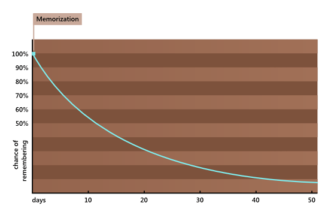
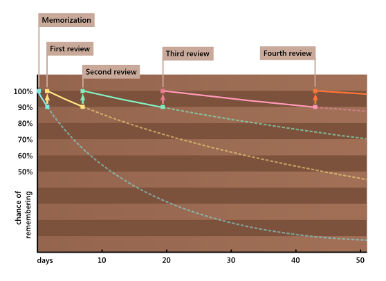

Lặp lại ngắt quãng
Bài viết là bản dịch và hiệu đính lại (Về mặt định dạng và nội dung) từ bài [SRS] thuộc lộ trình [How to learn English] của Antimoon
Mặc dù bài viết này tập trung vào việc học từ vựng tiếng Anh, nhưng phần mềm hỗ trợ hệ thống lặp lại ngắt quãng có thể được sử dụng để ghi nhớ mọi thứ: ngữ pháp, phát âm, y học, luật, API lập trình, thậm chí cả thông tin cá nhân như số điện thoại và ngày sinh.
Bạn có nhận thấy vốn từ vựng của bạn dường như không bao giờ tăng lên không? Lượng từ vựng một tuần trước đã học khi được kiểm tra lại thì nó bị bốc hơi đi đâu hết rồi?
Bạn có thể làm gì để giúp bản thân tiến bộ? Chỉ có một cách duy nhất. Bạn phải bắt đầu ôn tập thường xuyên để những kiến thức đã học không bị rơi vào quên lãng.
Bài viết sẽ tập trung vào việc sử dụng hệ thống lặp lại ngắt quãng (SRS - Spaced Repetition System). Tìm hiểu thêm về SRS thông qua danh sách phát Study For Exams của Nguyễn Duy Thành trên Youtube.
Các phần mềm hỗ trợ mô hình lặp lại ngắt quãng (SRS) hoạt động thế nào?
- Bạn thêm một số từ tiếng Anh vào SRS của mình. Để làm điều này, bạn tạo các học phần. Một mục có hai phần: câu hỏi (Q) và câu trả lời (A), ví dụ:
Front
Q: Mẹ của vợ hoặc chồng bạn
Back
A: mother-in-law
- Mỗi ngày, bạn ôn tập thông qua SRS. Phần mềm cung cấp cho bạn một số mục để xem lại (các mục khác nhau mỗi ngày). Ví dụ: nếu bạn đã thêm 50 từ vào SRS của mình, vào Thứ Hai, bạn có thể xem lại 5 từ, vào Thứ Ba - 4 từ khác, v.v.
Giả sử bạn có 1.000 từ tiếng Anh trong sổ ghi chép từ vựng của mình. Trong số 1.000 từ đó, có một số từ được ghi nhớ rất tốt (vì bạn đã ôn lại chúng nhiều lần hoặc đơn giản là vì chúng dễ nhớ). Những từ đó sẽ đọng lại trong trí nhớ của bạn rất lâu (chẳng hạn như một tháng hoặc một năm), vì vậy việc xem lại chúng chẳng ích gì. Những từ khác thì không nhớ nổi, chính là những từ cần được ôn tập, nếu không ôn thường xuyên, bạn sẽ quên nó ngay
Bí quyết là tìm ra từ nào thuộc nhóm thứ nhất và từ nào thuộc nhóm thứ hai, đó là khi phần mềm SRS vào việc
Ưu điểm cực lớn từ SRS là thay vì mỗi lần ôn lại tất cả từ vựng (như một số các phương pháp truyền thống như ghi chép, chép lại từ mới .v.v), bạn chỉ ôn lại một phần nhỏ trong số đó vì phần mềm lặp lại ngắt quãng biết từ nào bạn nhớ rõ và từ nào bạn nhớ kém nên nó sẽ giúp bạn không lãng phí thời gian vào những điều đã được biết rõ. Chỉ cần ôn lại những điều bạn thực sự cần ôn lại - những thứ có nguy cơ bị quên.
Kết quả khá ấn tượng: Bạn có thể ghi nhớ hàng nghìn từ và cụm từ dù chỉ cần 10 phút mỗi ngày để ôn tập. Nó giống như gắn thêm một ổ cứng vào đầu vậy.
Làm thế nào SRS biết những từ nào cần được ôn tập hay không?
Khi bạn sử dụng SRS, nó sẽ thu thập thông tin về bộ nhớ của bạn. Mỗi khi bạn ôn lại một từ, bạn sẽ tự chấm điểm - điểm này cho SRS biết mức độ bạn nhớ từ đó. Ví dụ, nếu bạn nhớ lại một từ ngay, chấm "Good"; nếu gần như quên sạch, chấm "Again".
Dữ liệu đó sẽ được đưa vào một mô hình thuật toán phức tạp, tính toán xem bạn sẽ nhớ mỗi từ trong bao lâu. (Mô hình này không hoàn toàn chính xác - nó không biết chính xác ngày bạn sẽ quên một từ, nhưng nó biết, chẳng hạn, bạn sẽ nhớ nó trong 30 ngày nữa với xác suất 90%.)
Mô hình bộ nhớ trong phần mềm lặp lại ngắt quãng dựa trên nghiên cứu khoa học về trí nhớ con người. Ký ức trở nên mạnh mẽ hơn sau mỗi lần ôn lại. Ví dụ: sau khi bạn học một từ mới, bạn có thể nhớ nó trong 2 ngày (với xác suất là 90%). Nếu bạn xem lại nó sau 2 ngày, bạn sẽ nhớ nó thêm 5 ngày nữa. Nếu bạn xem lại sau 5 ngày đó, bạn sẽ nhớ nó thêm 10 ngày nữa. Sau đó, thêm 20 ngày nữa. Và như thế. Thời gian giữa các lần ôn tập ngày càng dài hơn.
Hình bên dưới được gọi là đường cong lãng quên. Giả sử bạn học một từ mới vào ngày đầu tiên và bạn không bao giờ ôn lại nó. Đường cong quên cho bạn biết xác suất bạn sẽ nhớ từ này mỗi ngày sau đó. Ví dụ: sau 2 ngày thì còn khoảng 90%, nhưng sau 20 ngày thì chỉ còn khoảng 30%. Vào ngày thứ 50, xác suất nhớ lại thành công chỉ là 10% - từ đó gần như đã bị xóa khỏi đầu. (Thực tế còn phụ thuộc vào độ khó của từ.)

Sử dụng SRS khiến bạn phải ôn lại từ đó khi xác suất nhớ được nó vẫn còn cao (thường là 90%). Sau mỗi lần ôn, khả năng nhớ sẽ tốt hơn: xác suất nhớ lại giảm chậm hơn theo thời gian (đường cong quên lãng ngày càng phẳng hơn). Nói cách khác, quá trình quên bị chậm lại.

Đường cong quên lãng sau mỗi lần xem lại. Những nét đứt là khi không ôn tập lại
Hai điều nữa cần chú ý ở đây:
- Ở mọi thời điểm, cơ hội ghi nhớ từ của bạn luôn ở mức từ 90% đến 100%. SRS không bao giờ để nó giảm xuống dưới 90%. Điều này đơn giản có nghĩa là bạn luôn nhớ từ đó (với xác suất rất cao).
- Trong SRS, bạn xem lại các mục theo khoảng thời gian tăng dần thay vì xem lại chúng vài ngày một lần. Vì vậy, bạn đạt được hiệu quả tương tự với số lượng ôn tập nhỏ hơn nhiều.
Trong quá trình ôn tập
Đánh giá trong SRS được gọi là sự lặp lại. Đây là những gì xảy ra trong quá trình lặp lại:
- SRS sẽ hiện ra phần câu hỏi cho bạn
Front Q: Mẹ của vợ hoặc chồng bạn
A
- Bạn trả lời câu hỏi: Có thể là nhớ lại, nói to ra hoặc tương tự
- SRS sẽ cho bạn xem câu trả lời đúng
Front Q: Mẹ của vợ hoặc chồng bạn
Back A: mother-in-law
- Bạn so sánh câu trả lời của mình với câu trả lời đúng và tự chấm điểm (Theo Anki thì có 4 thang chấm là Again, Hard, Good, Easy, dựa vào mức độ nhớ từ mà bạn có thể chấm điểm). Điểm đấy sẽ cho SRS biết bạn nhớ từ đó tốt đến mức nào.
- Khi nào bạn nên xem lại mục đó sẽ do SRS thực hiện, chúng được gọi là khoảng lặp lại. Từ điểm của bạn, điểm trước đó, và các số liệu thống kê khác, SRS có thể tính toán thời gian bạn sẽ nhớ từ đó. Sau đó nó đặt ngày hiện lại thẻ tiếp theo.
Phiên học SRS
Quá trình học qua SRS:
- Xem lại các từ mà SRS đã chọn: Thông thường, số lượng từ mà bạn ôn tập mỗi ngày là rất ít. Ví dụ: nếu bạn có 8.000 từ tiếng Anh trong SRS, bạn có thể chỉ phải ôn lại 40 từ mỗi ngày.
- Ôn lại các từ khó: (hay còn gọi là công cuộc cày cuốc cuối cùng). Bạn xem lại tất cả các từ mà bạn chấm điểm thấp từ các phiên học trước
- Ghi nhớ từ mới.: Bạn học từ lần đầu tiên. Bạn sẽ xem lại những từ này trong một vài ngày.
- Thêm từ mới.: Tạo thêm các thẻ từ mới từ những nội dung đã học
Các thêm các thẻ mới vào hệ thống SRS
Bạn sao chép và đưa các câu ví dụ, từ và phiên âm vào SRS của mình. Bạn có thể lấy các câu ví dụ từ từ điển cũng như từ sách, phim hoặc game.
Có nhiều cách để tạo ra các phần học SRS. Kiểu đơn giản nhất trông như thế này:
Mặt trước
Front Q: They're always squabbling over money.
Mặt sau
Back A: squabble /'skwa:b.l/ = Cãi nhau về điều gì đó không thực sự quan trọng
Đây được gọi là một mục câu. "Câu hỏi" là một câu có từ hoặc cụm từ bạn cần học (ở đây: cãi nhau về điều gì đó). Câu này có thể lấy từ từ điển, sách, trang web, v.v. Khi nhìn thấy câu đó, bạn phải suy nghĩ về nghĩa của câu hoặc từ. Sau đó, bạn đọc cách phát âm và định nghĩa trong trường câu trả lời - điều này giúp bạn kiểm tra kiến thức của mình. Cuối cùng, bạn tự chấm điểm cho mình, tùy thuộc vào mức độ bạn nhớ nghĩa và cách phát âm.
Ưu điểm của SRS
- Bạn có thể nhớ (gần như) bất cứ điều gì bạn muốn.: Khi bạn đọc một từ trong sách hoặc nghe nó trong phim, bạn sẽ không bao giờ biết liệu nó có đọng lại trong trí nhớ của bạn hay không. Khi bạn thêm một từ vào SRS, nó sẽ ở đây, mãi mãi. (Thông thường, SRS cho phép bạn nhớ khoảng 95% số từ bạn đã thêm vào). Sẽ mất thời gian để tạo thẻ từ vựng, nhưng nó đáng đồng tiền bát gạo.
- Bạn không lãng phí thời gian vào phần bạn đã nhớ rõ hoặc phần dễ.: Bạn chỉ ôn lại những từ mà bạn gần như đã quên. SRS của bạn chỉ hỏi bạn những câu hỏi khó để bạn không lãng phí thời gian cho những câu hỏi dễ. SRS = Làm ít ăn nhiều.
- Càng ngày càng mất ít thời gian của bạn. Vì thời gian giữa các lần lặp lại dài hơn nên khối lượng công việc của bạn (số lần lặp lại hàng ngày) ngày càng giảm. Bạn sử dụng SRS càng lâu thì càng mất ít thời gian để ghi nhớ một nhóm từ trong bộ nhớ. Ví dụ: sau một năm sử dụng SRS, bạn sẽ chỉ mất chưa đến 10 lần lặp lại mỗi ngày để ghi nhớ 2.000 từ trong bộ nhớ.
Có thể đạt được những gì?
Sau khi thêm khoảng 1.000 -> 2.000 mục vào SRS, bạn sẽ bắt đầu nhận thấy những thay đổi lớn trong Tiếng Anh của mình. Dưới đây là một số mục tiêu mà SRS có thể giúp bạn đạt được:
- Cải thiện vốn từ vựng của bạn. Khi tôi bắt đầu sử dụng SRS (SuperMemo), điều đầu tiên tôi nhận thấy là vốn từ vựng tiếng Anh của tôi được cải thiện nhanh chóng. Gần như ngay lập tức, tôi bắt đầu sử dụng những từ mới, thú vị khi nói và viết - những từ như DEVOUR, APPALLING hoặc LIVE DOWN. Trong một giờ, bạn có thể thêm khoảng 30 từ mới vào SRS của mình. Bạn có thể bắt đầu sử dụng những từ này ngay lập tức - tại lớp học tiếng Anh tiếp theo, trong email tiếp theo, v.v. Hãy thử xem!
- Hiểu sách, trang web, phim, chương trình TV, v.v. Với vốn từ vựng ngày càng tăng, việc đọc và nghe tiếng Anh sẽ ngày càng trở nên thú vị hơn. Bạn sẽ nhận thấy các từ trong SRS của mình ở khắp mọi nơi - trong sách, phim, trò chơi điện tử, v.v. Bất cứ khi nào nhìn thấy một từ mà bạn đã thêm vào SRS, bạn sẽ thấy được sự tiến bộ của bản thân
- Cải thiện ngữ pháp của bạn. Các câu ví dụ trong SRS là một cách input rất hiệu quả vì bạn có thể xem đi xem lại chúng. Sau một thời gian, bạn sẽ quen với cấu trúc ngữ pháp trong các câu ví dụ. Chúng sẽ trở nên tự nhiên đối với bạn. Ngoài các câu ví dụ, bạn có thể thêm các mục đặc biệt để kiểm tra kiến thức ngữ pháp của mình.
- Học cách phát âm của các từ tiếng Anh. Bạn có thể thêm cách phát âm vào các phần học thông thường của mình hoặc sử dụng các mục đặc biệt để học cách phát âm các từ tiếng Anh. Điều này rất quan trọng vì cách phát âm tiếng Anh không cố định - nhiều từ (ngay cả những từ cơ bản) có cách phát âm khá "gây sốc". Nếu bạn thêm cách phát âm vào SRS của mình, bạn sẽ trở thành một người nói tự tin hơn vì bạn sẽ không còn phải băn khoăn về cách phát âm hàng trăm từ tiếng Anh như COVER, WON'T hay FOREIGN.
- Loại bỏ những sai lầm của bạn. Có một kỹ thuật rất hiệu quả để xử lý lỗi: Bất cứ khi nào ai đó sửa câu tiếng Anh của bạn, hãy thêm câu đúng đó vào SRS của bạn làm phần cần học. SRS của bạn sẽ khiến bạn phải xem lại phiên bản chính xác nhiều lần. Và rồi, câu sai trong đầu mình sẽ thành cái câu đúng đó.
Thêm động lực học tập
Phần mềm lặp lại ngắt quãng có hai lợi thế về mặt tâm lý so với các phương pháp học tập khác, chẳng hạn như nạp input (chỉ đọc/nghe) hoặc các lớp học tiếng Anh:
- Mục tiêu được định sẵn: Người chạy đo khoảng cách họ đã chạy. Những người đang ăn kiêng đo cân nặng của họ. Nếu bạn thể hiện mục tiêu dưới dạng một con số, nó sẽ trở nên cụ thể và mạnh mẽ hơn. Bạn sẽ tiếp tục nghĩ về con số đó và bạn sẽ muốn con số đó tăng lên. Nếu nó tăng lên, bạn sẽ có cảm giác thành tựu. "Hôm nay tôi đã chạy được 4,5 km" sẽ tốt hơn nhiều so với "Hôm nay tôi đã chạy được một quãng đường khá dài". Với SRS thì nó sẽ là: "Tôi đã ghi nhớ được 2123 từ", "Hôm nay tôi sẽ ghi nhớ thêm 20 từ mới" hoặc "Tôi sẽ đạt được 2500 vào cuối tháng".
- Cảm giác chắc chắn: Với SRS, bạn biết rằng mỗi từ bạn thêm vào sẽ đọng lại trong đầu bạn, vì vậy bạn luôn cảm thấy việc học không bị lãng phí.
Có cần phải tự thêm học phần không?
Mặc dù việc tạo các học phần của riêng bạn là cách tốt nhất để sử dụng phần mềm lặp lại ngắt quãng nhưng bạn có thể sử dụng nội dung SRS do người khác tạo. Ưu điểm lớn nhất của bộ sưu tập SRS làm sẵn giúp bạn tiết kiệm rất nhiều thời gian.
Vấn đề lớn nhất là không dễ tìm được những bộ sưu tập chất lượng cao. Tuy nhiên, nội dung SRS làm sẵn có thể là một ý tưởng hay nếu bạn có ít thời gian hoặc ít kỹ năng sử dụng máy tính, đặc biệt nếu bạn là người mới bắt đầu (chất lượng không quan trọng lắm nếu bạn mới bắt đầu học tiếng Anh).
Làm cách nào để bắt đầu sử dụng SRS?
Tải Anki và bắt đầu.